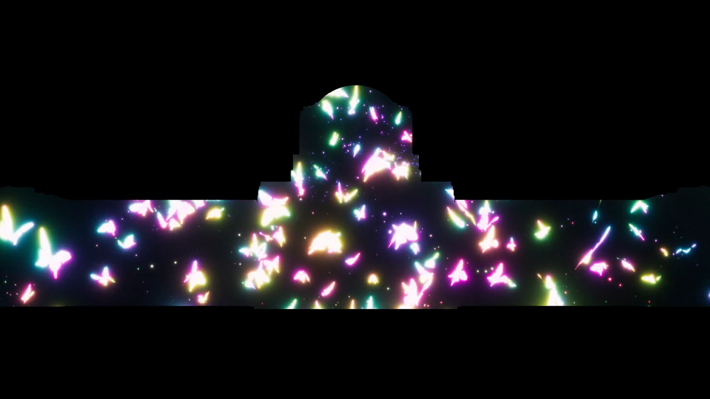

1MinuteProjectionMappingInTokyo2021
Working period
2021月7月 - 2021月9月
Tools
Unity、Blender、Materials、ShaderGraph、VFXGraph
Role
Programing、Modeling、MakeMovie、MakeAudio
About this contents
1minute Projection Mapping in TOKYO 2021(https://www.youtube.com/watch?v=FFf9oE6JBMk)
初参加し制作しましたテーマは「HOPE」
運営様の配慮で現物の建物に投影して頂けて、いつか自分の作品を沢山の人に見てもらえるようになりたいと思いました。
Story
光で新たに誕生する命の喜びを表し、3つの球が現れた
エデン、アダム、イブが一つに繋がり空高くから地上に落ち命の種をばら撒かれました。
落ちた命の種がそれぞれの道を進んでいき、
それぞれ進んでいった命が集まり綺麗な模様を映し出し、
次は蝶になり一番の輝きを見せてくれます。
輝き終わった命が最後の力を振り絞り無数の波紋を生み出し、
そして一筋の光で次の時代を繋いで行くことでしょう。